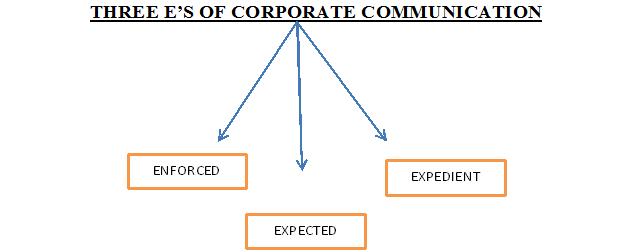
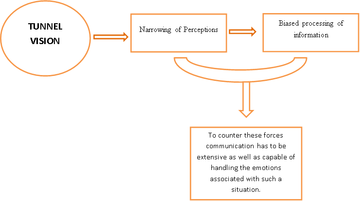
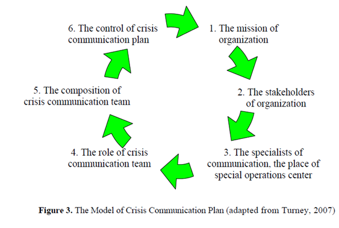
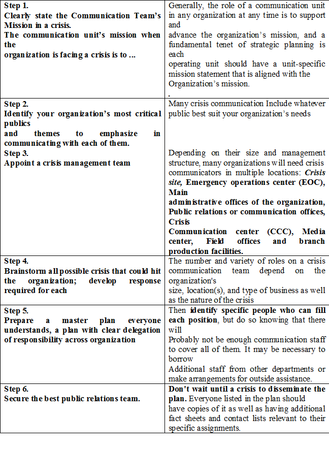

Corporate Communication and Crisis Management
ABSTRACT
In today‘s rapidly changing business environment almost every company experiences crisis. Though many of them never try to overcome. Crisis problems are generally not solved in the primary state and are usually chaotic, without any strategic management plans. The situation gets worse when the companies employees as well as internal and external environment have to be informed. Therefore it is necessary to represent the organization realistically to train the specialists of knowledge management. The situation does not become easier because of the negative approach towards crisis though crisis management can bring positive results in an organization. One of them is efficient conflict management during crisis period. Secondly it will also help the individual to enhance his communication skills that are capable of handling the emotions in pressure situations, which sometimes becomes a daunting task. Moreover in present era of globalization where companies are experiencing the transformational changes such as incorporation, international capital appearance, wide geography of the companies, mobility of employees, global crisis, there is a need to manage communication process in business to generate communication ideas for crisis prevention and management. Therefore in this changing context crisis management process should be re-evaluated in the theoretical as well as applied form for the efficient crisis management plans.
In this context efficient Corporate Communication Problems still remains relevant in social, economic and Managerial aspects. The structure of the paper:
- In the first part Corporate Communication concept Has been based up emphasizing the importance of corporate Communication in the management science structure;
- In the second part the process of crisis planning and Strategic management has been discussed;
- In the third part practical recommendations have been defined – “Plan of Efficient Crisis Communication.”
INTRODUCTION
Depending on the organization Corporate Communication includes: public relations; crisis and emergency communication; corporate citizenship; reputation management; community relations; media relations; investor relations; employee relations; government relations; marketing communication; management communication; corporate branding and image building; advertising. Modern world has shrunk in terms of transnational communication owing to the revolution in technology. Satellite communication brings any event happening in any part of the world, to the living rooms of the people, watching in any part of the globe. This means that when unexpected natural or other forms of disaster strike, communication has to be given quickly and suitably, but with little or no preparedness for it. Crisis communication involves a quick, meaningful and accurate description of the event that has occurred.
Corporate communication is a very vital part of modern day business. EFFECTIVE DECISION= QUALITY THINKING X ACCEPTANCE

ENFORCED is that information that has to be communicated by a government directive.
EXPECTED information refers to those messages that the customers/ clients would like to know about. This is not a mandatory piece of communication. So many organizations are frequently guilty of lapses on this count.
EXPEDIENT information is that which the company would like the customer to know. The company mission statement, its commitment in terms of products, services, employment, quality, value for money, concern with the environment are some of the matters that every company wishes that others should know about.
Corporate lessons
- To be sitting and doing nothing you must be sitting very, very high up which signifies in order to move in the organization a person must possess good communication skills.
- Questioning for clarification and understanding.
Errors in the field of business communication
- Finishing others sentences
- Preparing our response before someone is done speaking
- Filtering content based on the speaker
- Speaking for others (we…)
- Jumping to conclusions
As a classic example of an individual perfect cooperative communication skill we are going to introduce a new term: INTRAPRENEURSHIP
- Intrapreneurship is the act of behaving like an entrepreneur, except within a larger organization.
- An intrepreneur or intrapreneur is a person who has an entrepreneur skill set but works within an organization, enterprise, or venture. This could be within an organization that seeks the dynamism of forward thinking employees or incubation companies.
- A successful intrepreneur must possess good communication skills so that he is capable of convincing the top authorities in order to form a capable highly specific technical team. (Being the boss under the boss … boss of one self).
- Real testing of the communication skills of an entrepreneur are tested I the crisis situation of the corporation.
Communication is the pipeline of any corporation. However its influence is not fully recognized and hardly ever exploited, meaningfully. Most companies choose to communicate extensively only under certain pressure conditions like crisis.
The basic reasons for crisis to occur are:
Fierce Competition: Competition means threat to survival. During this race for survival some organizations tend to become liable towards financial damage. This results in frantic attempts to communicate. Communication at all levels becomes necessary. Since messages are initiated at the time of crisis there is a fire fighting quality to it sometimes distortions are likely to occur because the communication is hurried and intended to tide over a particular set of difficulties.
Change: Companies involved in any form of change have to engage in a lot of communication in order to facilitate the change process. Change is almost always resisted. So communication is the only tool that could help smoothen change or transition. Communicating under the pressure of change is fraught with several difficulties.

- Rumors: When cooperation are not very communicative, rumours and smear campaigns can take over. They travel very fast and wide because the grapevine is active. Such channels are vague enough to fuel misinformation, rapidly and wildly. If communication is not under way soon the consequences could be very damaging to the organization.
Almost all corporations face crisis situations, but these situations can actually serve to build the public’s trust with the company if they are handled correctly. A company builds this trust by how it communicates to the public about the situation. This kind of communication is called corporate crisis communication.
Crisis as Opportunity
To address such shareholder impact, management must move from a mindset that manages crisis to one that generates crisis leadership. Research shows that organizational contributory factors affect the tendency of executives to adopt an effective “crisis as opportunity” mindset. Since pressure is both a precipitator and consequence of crisis, leaders who perform well under pressure can effectively guide the organization through such crisis.
Most executives focus on communications and public relations as a reactive strategy. While the company’s reputation with shareholders, financial well-being, and survival are all at stake, potential damage to reputation can result from the actual management of the crisis issue. Additionally, companies may stagnate as their risk management group identifies whether a crisis is sufficiently “statistically significant”. Crisis leadership, on the other hand, immediately addresses both the damage and implications for the company’s present and future conditions, as well as opportunities for improvement.
In order to completely understand the importance of effective crisis communication, let us examine through case studies:
Johnson & Johnson’s response to the Tylenol incident –1982
An unknown terrorist spiked Tylenol capsules with cyanide which resulted in seven deaths. Media coverage made it clear that J&J had no control over this post manufacture product tampering, suppressing any Could counterfactuals. The actions taken by J&J were considered as highly effective:
The company recalled extra-strength Tylenol from all store shelves across the country, offered a reward for the murderer, and introduced a tamper resistant package.
The features that made Johnson & Johnson’s handling of the crisis a success included the following:
- They acted quickly, with complete openness about what had happened, and immediately sought to remove any source of danger based on the worst case scenario - not waiting for evidence to see whether the contamination might be more widespread
- Having acted quickly, they then sought to ensure that measures were taken which would prevent as far as possible a recurrence of the problem
- They showed themselves to be prepared to bear the short term cost in the name of consumer safety. That more than anything else established a basis for trust with their customers.
Airport Control Tower
The airport control tower alerts its own Crash/Fire rescue units and requests that the local emergency service provide backup rescue assistance in fire, medical, welfare and research and rescue capabilities and informing also the airline company about the crisis.
Intentional Act Of Terrorism
An example of powerful and successful crisis management came on September 11, 2001. The world watched heroes – firefighters, police officers, medical personnel, and rescue workers – respond to the unimaginable disaster. Skills they learned and practiced in hundreds of different crises prepared them for the ultimate challenge. The many teams became one team, and their enormous courage, passion, planning, preparation, and total commitment inspired the country and the world. They gave us the ultimate example of crisis management on a massive, global scale, and the lessons learned from their response to September 11 apply to whatever crisis leaders may face on any scale in any organization. Some of us who have had the uncoveted experience of managing a crisis in a complex and far-flung organization know from that experience there are some essential steps to be taken by an organization, regardless of size or sector, long before disaster strikes.
STYLES OF CORPORATE COMMUNICATION AND CRISIS MANAGEMENT
WHITE HAT: deals with information in neutral situation
- What is available
- What is needed
- How to obtain
RED HAT: deals with feelings
- What is my gut reaction
- Do I like the way it is being done
BLACK HAT: reviews things in critical situations
- Why it won’t work
- Why we need to be cautious
YELLOW HAT: deals with logical benefits in optimistic situations
- It would work if…..
- The positive side of this issue is…..
GREEN HAT: generates alternatives in creative situations
- Care we do differently
- Could there be any other approach
MODEL OF CRISIS COMMUNICATION PLAN

Six Steps to Preparing an Effective Corporate Communication Plan at the moment of crisis

CONCLUSION
Corporate Communication offers strategic management functions. Depending on the organization, Corporate Communication includes: public relations; crisis and emergency communication; corporate citizenship; reputation management; community relations; media relations; investor relations; employee relations; government relations; marketing communication management communication; corporate branding and image building; advertising. Generalizing and conceptually basing it can be claimed that successful professional development of the next generation of Corporate Communication executives will focus on Understanding of Corporate Communication functions and on strategic implementation capabilities.
The Model of Crisis
Communication Plan emphasizes the six stages of Preparation:
- The mission of organization
- The Stakeholders of organization
- The specialists of Communication and the place of special operations Center
- The role of crisis communication team
- The Composition of crisis communication team
- The control Of crisis communication plan.
To be able to properly get prepared for a Crisis Planning and Strategy Management processes, both scholarly discussions and practical solutions are necessary. Action planning enables management to not only evaluate the dynamics within a business environment, but also evaluate similar changes related issues. In this way, action planning may be helpful in integrating the constituent parts of a strategy process and developing the crisis management perspectives.
Crisis Management requires collaboration with systems, efficient internal and external communication, setting the persons and their roles expressed by special duties and responsibilities, effective collective decision making, control and collaboration responsibility.
Another important element is the managers’ ability to communicate with the media representatives in crisis situations. The managers have to be prepared what to Say, ho w to present information in order not to Damage the company’s reputation.